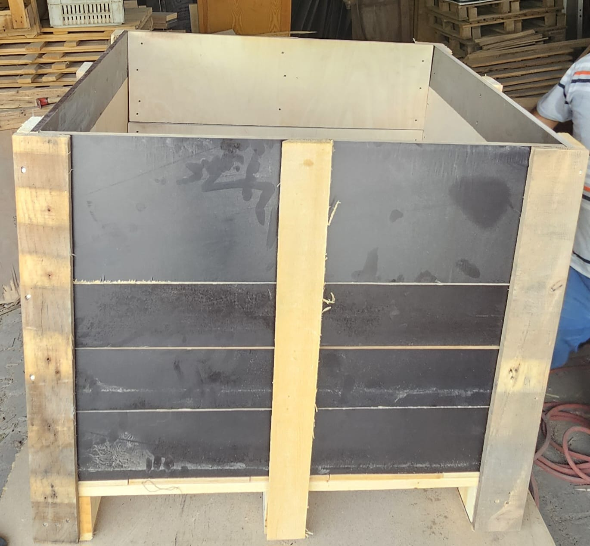

Yusuf Yeşildal Ambalaj
Yusuf Yeşildal Ambalaj
Dayanıklı Palet Sandık Tedariği

Firmamız, lojistik ve depolama sektöründe kritik öneme sahip olan palet sandık ihtiyaçlarınız için özel çözümler sunar. Sektördeki en kaliteli malzemelerle ürettiğimiz pleymut sandık, taşıma sandığı ve depolama sandığı gibi ürünler, ürünlerinizi güvenle taşımanızı ve uzun süre muhafaza etmenizi sağlar. İster ağır sanayi ürünleri ister hassas eşyalar olsun, her türlü yükünüze uygun dayanıklılıkta sandıklarımız mevcuttur.
Ürünlerimizden Örnekler
{kind=link}
{kind=link}
{kind=link}
{kind=link}
Ürün Özellikleri ve Avantajları
- Yüksek Dayanım: Birinci sınıf ahşap malzemeden üretilmiştir, ağır yüklere karşı maksimum direnç gösterir.
- Tekrar Kullanılabilirlik: Uzun ömürlü yapısı sayesinde defalarca kullanılabilir, işletme maliyetlerinizi düşürür.
- Çevre Dostu: Geri dönüştürülebilir ahşap malzemeler kullanılarak üretilir, sürdürülebilir bir çözümdür.
- Özelleştirilebilir: İhtiyacınıza göre farklı boyut, ölçü ve özelliklerde üretim yapılabilir.
Palet sandık tedariği konusunda güvenilir ve kaliteli bir çözüm ortağı arıyorsanız, doğru yerdesiniz. Detaylı bilgi ve fiyat teklifi almak için bizimle iletişime geçebilirsiniz.
Fiyat Teklifi Alın